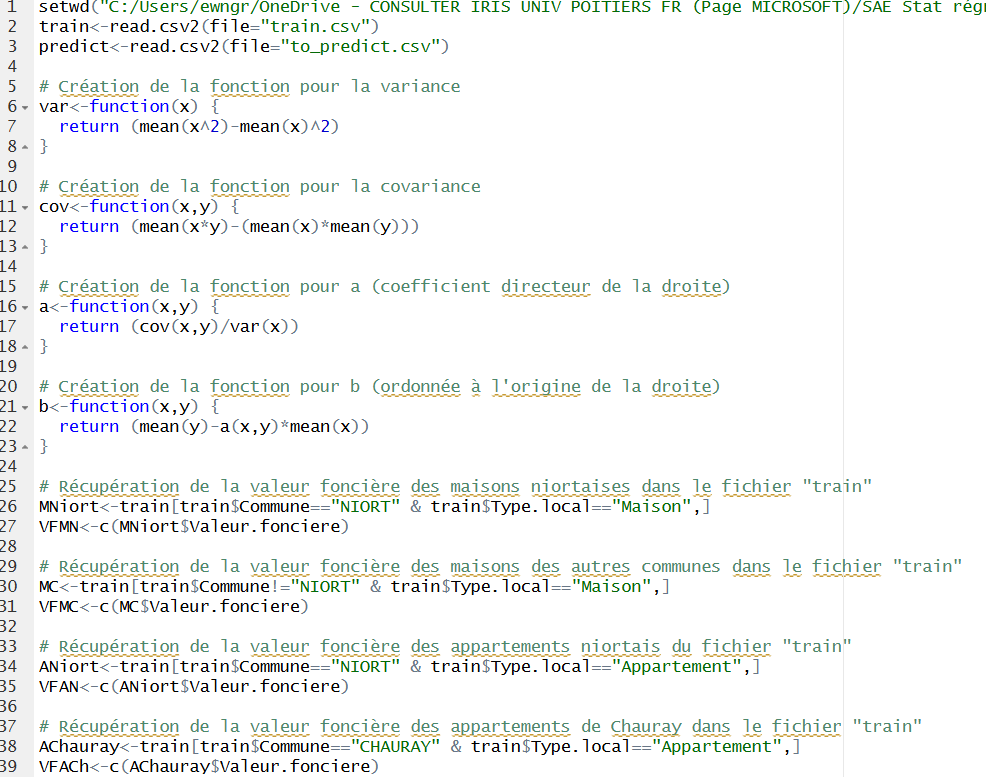
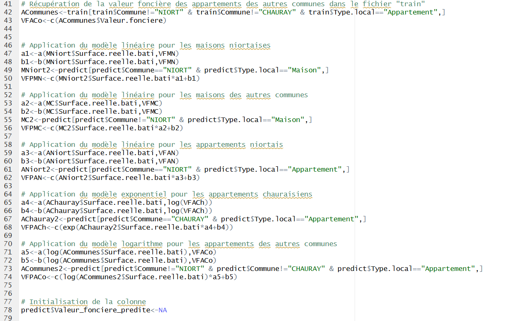
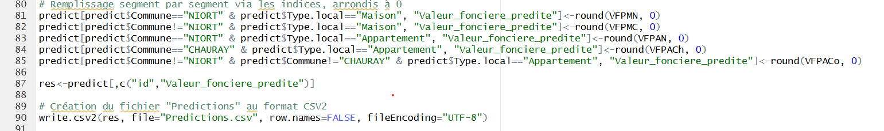

Ce travail se basait sur les logements (appartements ou maisons) de l'agglomération niortaise. L'objectif de cette SAÉ était d'appliquer des régressions linéaires simples afin de pouvoir déterminer le prix d'un logement.
Les régressions linéaires servent à savoir s'il y a un lien entre deux modalités, ici entre le prix du logement et, par exemple, le nombre de pièces. Une régression linéaire peut être calculée avec différents modèles (exponentiel, logarithmique, linéaire…). Chaque modèle a une influence sur les résultats.
Pour ce travail, avec Hugo PONS, nous devions trouver des régressions linéaires permettant de déterminer le prix du logement. Nous disposions de plusieurs fichiers Excel avec différentes données recensant le type de logement, la surface du terrain, la localisation, etc. Deux fichiers permettaient de rechercher ces régressions avec le prix des habitations ; le dernier était celui sur lequel nous devions appliquer les régressions afin de prédire le prix.
Les calculs ont été réalisés sur R, après avoir importé les fichiers « Train » (entraînement) et « To_predict » (résultats) au format csv. La segmentation retenue est la suivante : les maisons niortaises, les maisons des autres communes, les appartements niortais, les appartements chauraisiens et les appartements des autres communes.